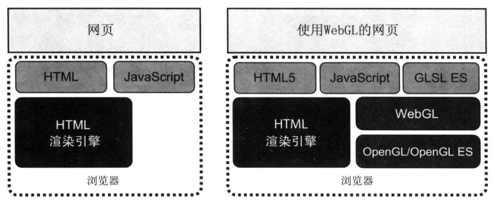
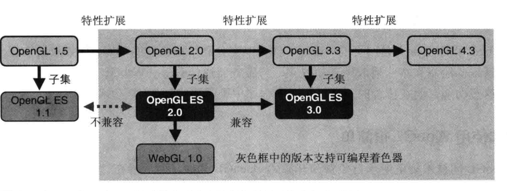
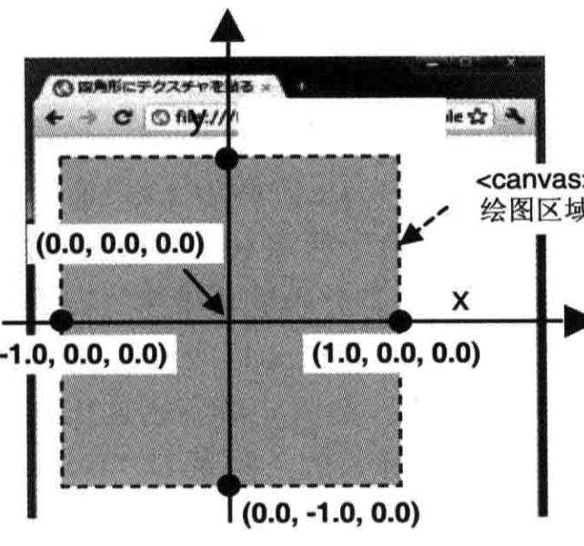
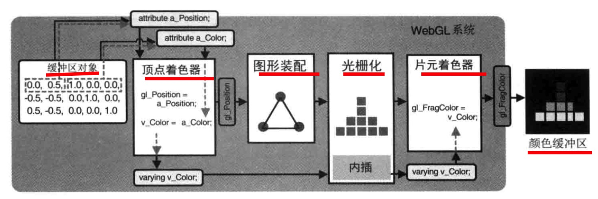
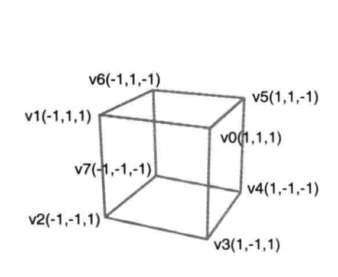

webGL 入门到放弃
WebGL 入门到放弃
WebGL(Web Graphics Library)是在浏览器中渲染3D图形，并可与之交互的技术。
- WebGL实现
- svg vs canvas vs WebGL
- 一个简单的例子: 点
- 再来一个例子: 彩色三角形
- 一个复杂的例子: 立方体
- 为何放弃
- 相关的类库和参考资料
WebGL的实现


svg & canvas & WebGL
| svg | canvas | webgl | |
|---|---|---|---|
| 2d/3d | 2d | 2d | 2d + 3d |
| 交互便捷 | ✨✨✨ | ✨✨ | ✨ |
| 开发难度 | ✨ | ✨✨ | ✨✨✨ |
| 失真 | 不失真 | 失真 | 失真 |
| 引用图片 | x | √ | √ |
| 适合场景 | 数据较少, icon, 高保真 | 数据较多, 复杂场景 | 3D, 复杂场景 |
一个简单的例子: 点
查看代码: HelloPoint.html
套路
- 定义着色器
- 绑定数据
- 绑定交互事件
WebGL中的一些概念
着色器
顶点着色器：描述点的特性, 大小和位置
片元着色器：逐个片元(像素)处理, 颜色
坐标系

再来一个例子: 彩色三角形
查看代码: ColorTriangle.html
颜色

一个复杂的例子
HelloCube.html

为何放弃
ThreejsCube.html
开发效率
相关的类库和参考资料
- three.js
- deck.gl
- babylon.js
- so on
webgl编程指南
mdn文档